Contents
- 1What this guide coversThe Portal, the approval workflow, and where your offices come in
- 2Who does whatEvery part of the process
- 3The workflow at a glanceThe route in Jotform, and which records reach each office
- 4Reading a workflow emailWhat every email and request has in common
- 5For the Office of the RegistrarThe authorization, the Banner setup, and dual enrollment
- 6For Human ResourcesEach request in the hr@bpcc.edu inbox, and what its outcomes do
- 7ScenariosNine records from submission to filing
- 8Common questionsThe ones we expect to hear most
- 9Who to contactQuestions about any record or email
1What this guide covers
The Faculty Qualifications and Credentialing Portal is where BPCC documents that each faculty member is qualified for the academic courses they teach. Divisions build a packet for each determination and submit it for approval in Jotform, and the approval workflow routes it step by step. Two of those steps belong to your offices, and both arrive by email.
Human Resources confirms whether it holds the official transcripts a determination relies on and records them when they arrive (Sections V.2, V.8). The Office of the Registrar sets each approved instructor up in Banner on Academic Affairs' authorization. Neither office decides who is qualified to teach, and neither needs a Jotform account.
This guide shows each email as it will arrive in Outlook, what it asks of you, and what happens after you answer. Section 7 follows nine records from submission to filing.
What a packet is
One packet records one determination for one instructor. It opens with a short report: the courses, the standard each was measured against, the credential the determination relies on, and the route the record takes through approval. Every supporting document follows it, merged in, with the record ID printed below each page. The transcripts in a packet are copies, which support review but are never official.
Timeline
| November 18, 2026 | Academic Affairs walks Academic Affairs, Enrollment Management and Student Services, and Human Resources leaders through the approval process. |
| After Thanksgiving | The Portal goes to the deans, and the first packets come in once Academic Affairs announces that the approval workflow is live. |
| January 1, 2027 | The policy takes effect. Spring 2027 is the first term under it. |
| May 6, 2027 | A first submission is in for every current faculty member (Section VI.2), so requests will come for longtime faculty as well as new hires. |
| Summer 2027 | The policy applies in full to every individual it covers, new or continuing (Section VI.5). |
No one serves as instructor of record until Academic Affairs approves the assignment and Human Resources confirms whether it holds the official transcripts the determination relies on. Those not yet received may follow within 30 days (Sections V.2, V.8).
2Who does what
Credentialing is an Academic Affairs process from start to finish. Your offices come in near the end of each approval.
Human Resources
Confirms whether it holds the official transcripts a determination relies on, including any course-by-course evaluation of credentials earned outside the United States, and records them when they arrive. Keeps the official personnel record.
Office of the Registrar
Sets each approved instructor up in Banner for the effective term, on Academic Affairs' authorization, so the division can assign the instructor in SSASECT.
Academic Affairs
The Associate Vice Chancellor of Instruction (AVCI) or a designee evaluates every packet, and the AVCI decides exception-based requests and emergency credentials. When official transcripts differ from a packet, the AVCI decides whether they support it. Academic Affairs files every final record.
Deans and assistant deans
Submit a packet for every faculty member in the division and assign an instructor only after the Approved to teach email (Section V.8). Each term, the dean certifies that assignments match approvals (Section V.12).
Faculty Qualifications Review Committee
Reviews each exception-based request and recommends approval, approval with conditions, or denial to the AVCI (Section V.5).
Office of Admissions
Builds every dual enrollment section and CRN in Banner. It receives a copy of each approved dual enrollment determination for its roster of approved instructors (Section V.9) and makes no determinations.
3The workflow at a glance
Each packet becomes one submission in Jotform, and the workflow routes it by record type. This is the route for an academic or professional determination, the kind your offices will see most.
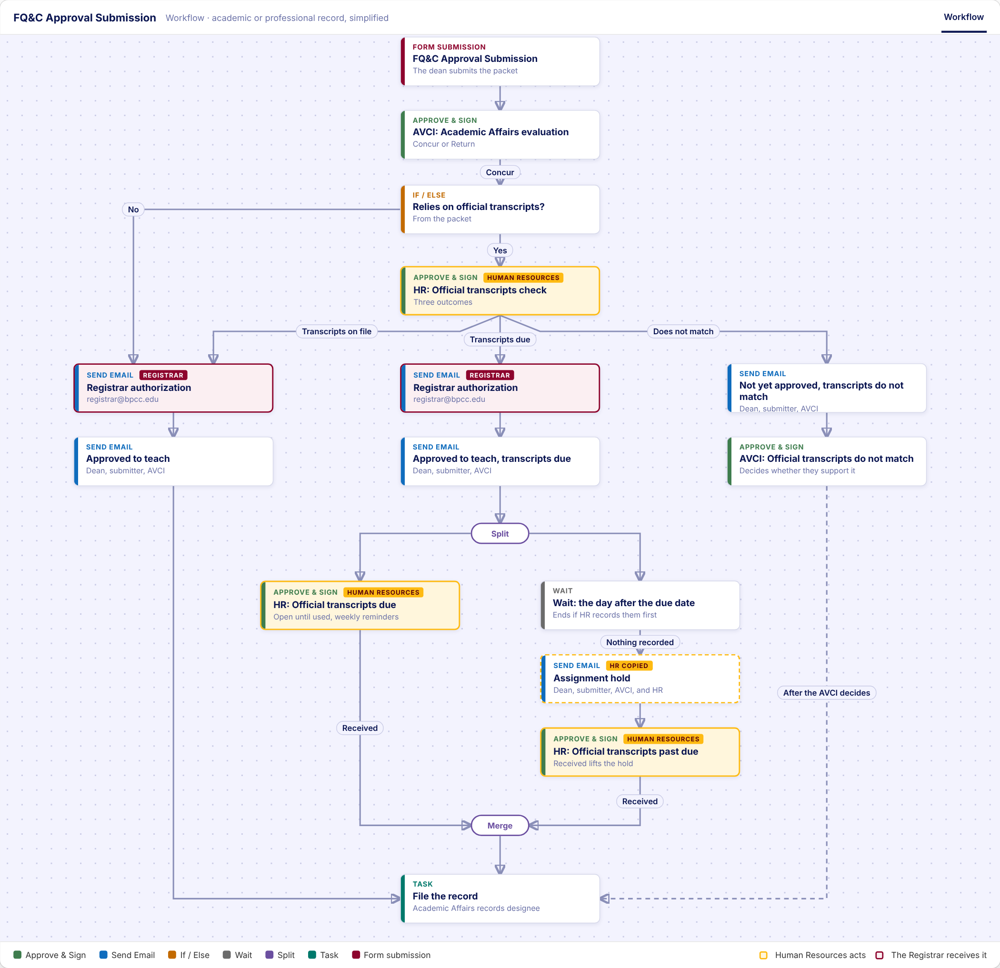
A record that relies on no official transcripts goes straight from Academic Affairs to the Registrar authorization. Transcripts due approves the instructor provisionally, so the Registrar's email and the dean's approval go out while Human Resources waits for the officials, and a Does not match stops the record until the AVCI decides.
Which records reach each office
| Record | Human Resources | Office of the Registrar |
|---|---|---|
| Academic or professional determination | The official transcripts check, when the determination relies on official transcripts | The authorization, once the record is approved |
| Exception-based request | The same check, if the AVCI approves the request | The authorization, if approved |
| Reconsideration | The same check, if the Vice Chancellor for Academic Affairs and Institutional Effectiveness approves a denied request (Section V.5) | The authorization, if approved |
| Emergency credential | Emergency transcripts, for the personnel record (Section V.7) | The emergency authorization, for the named sections only |
| Removal, transition plan, or closing a plan | Nothing | Nothing |
| Requalification review | A check of any transcripts earned since the original determination | Nothing, since the instructor is already set up |
| Preliminary review | Never routed. A preliminary review of a prospective instructor is not a determination (Section V.8). | |
4Reading a workflow email
Every workflow email comes from Bossier Parish Community College through Jotform and shares one layout. The first request Human Resources receives on a record shows each part.
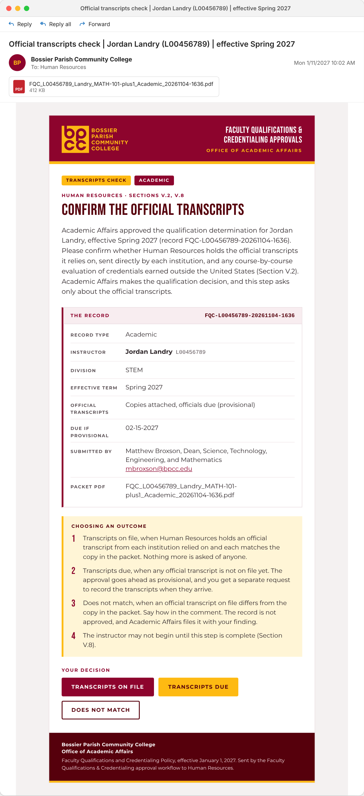
1 2 3 4 5 6 7No sign-in is needed, so anyone who works the shared inbox can answer a request, and the signature records who did. Replies to any workflow email reach Academic Affairs. A request stays open until someone answers it, and Jotform sends reminders on the ones that wait for transcripts.
5For the Office of the Registrar
Each approval sends one email to registrar@bpcc.edu: the AVCI's authorization to set the instructor up in Banner. It replaces the request divisions used to send, so divisions no longer email the Registrar to have a new instructor tagged.
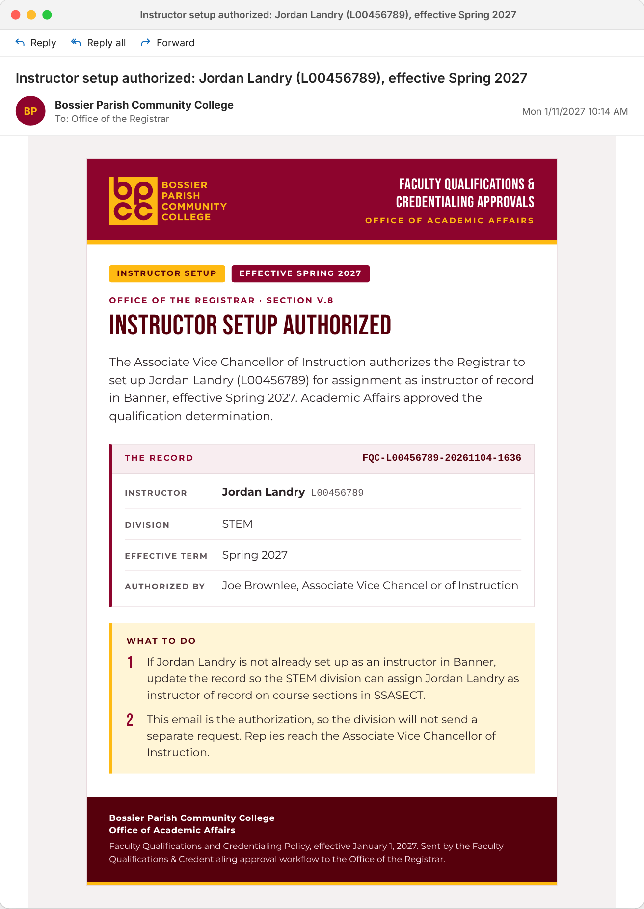
What it says
| Instructor | The name and employee ID. Most employee IDs are L-numbers; some longtime employees have H-numbers, the same length (a letter and eight digits). |
| Division | The academic division that submitted the record, and that will assign the instructor. |
| Effective term | The first term the approval covers. The Winter session belongs to the Spring term and Maymester to the Summer term (Section IV). |
| Authorized by | The Associate Vice Chancellor of Instruction. The email is the authorization, so no separate request follows. |
When it arrives
After Academic Affairs approves the record and, when the determination relies on official transcripts, after Human Resources confirms whether it holds them. A provisional approval, with transcripts still due, sends it too. The dean's Approved to teach email goes out at the same moment, so the division is ready to assign as soon as the setup is done.
Setting the instructor up in Banner
- Find the person by employee ID.Instructors reach the Portal already hired, so the employee ID is in Banner. If it is not, reply to the authorization.
- Set the instructor up for assignment, effective the term the email names.SSASECT then accepts the instructor on a section. If the instructor is already set up for that term, as most current faculty will be, nothing more is needed.
- Record the faculty staff type and the advisor designation.Use Banner's STVFSTP codes, below. If what Banner holds for a current instructor differs from the record, reply to the authorization, and Academic Affairs confirms it with the dean.
The workflow does not wait for a reply.
Faculty staff type and advisor designation
| Code | Who it is |
|---|---|
| FT | Full-time faculty. Every full-time instructor carries the advisor designation. |
| ADJ | Adjunct faculty. |
| PT | Part-time faculty. |
| HS | A dual enrollment instructor employed by a partner school system or school. A BPCC employee who teaches dual enrollment sections carries FT, ADJ, or PT. |
The dean answers the advisor designation for everyone who is not full-time. Most adjunct, part-time, and dual enrollment instructors are not tagged as advisors, but some are, such as full-time staff who also teach as adjuncts.
The packet already records the faculty staff type, the advisor designation, the primary location, and any high school in its Assignment table. Academic Affairs is adding them to the Registrar authorization, so the whole setup can be done from the email.
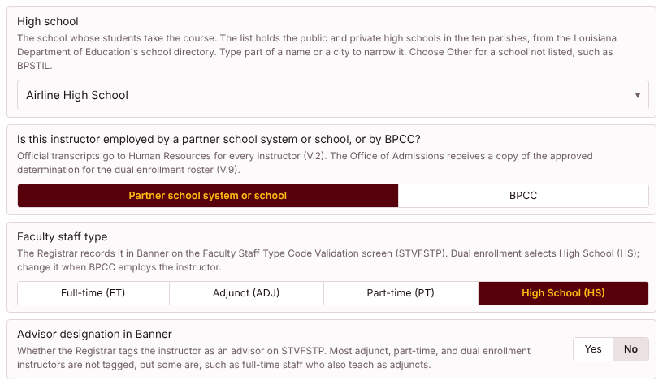
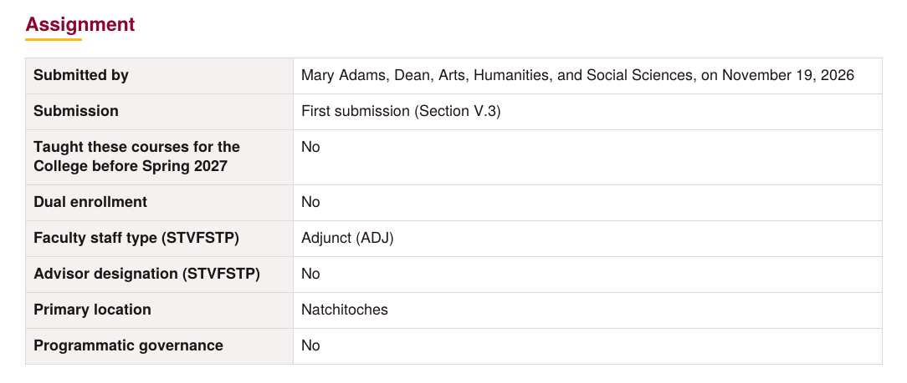
Emergency credentials
In extraordinary circumstances the AVCI may authorize an individual for named sections in a single term (Section V.7). The emergency authorization covers only those sections and ends with the term, and any assignment in a later term needs a new approval, which sends its own authorization.
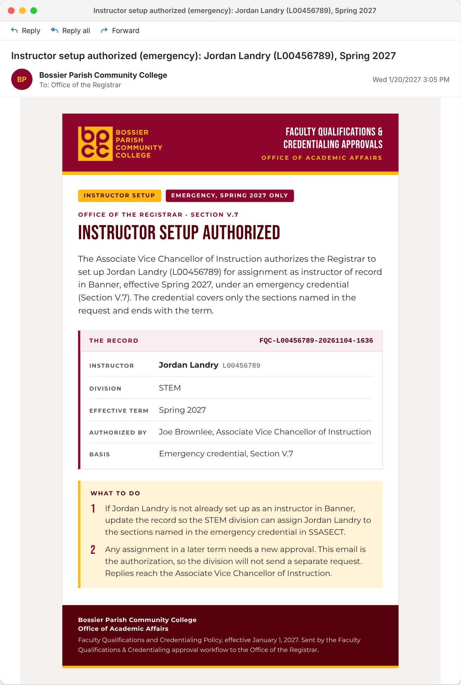
Dual enrollment instructors
A dual enrollment instructor is held to the same standard as every other instructor of the course and approved the same way (Section V.9), so the authorization arrives like any other. The Office of Admissions builds every dual enrollment section and CRN and receives a copy of each approved dual enrollment determination for its roster. The packet names the high school, chosen from the Louisiana Department of Education's list for the ten parishes or typed under Other. Emergency credentials are not available for dual enrollment sections (Section V.7).
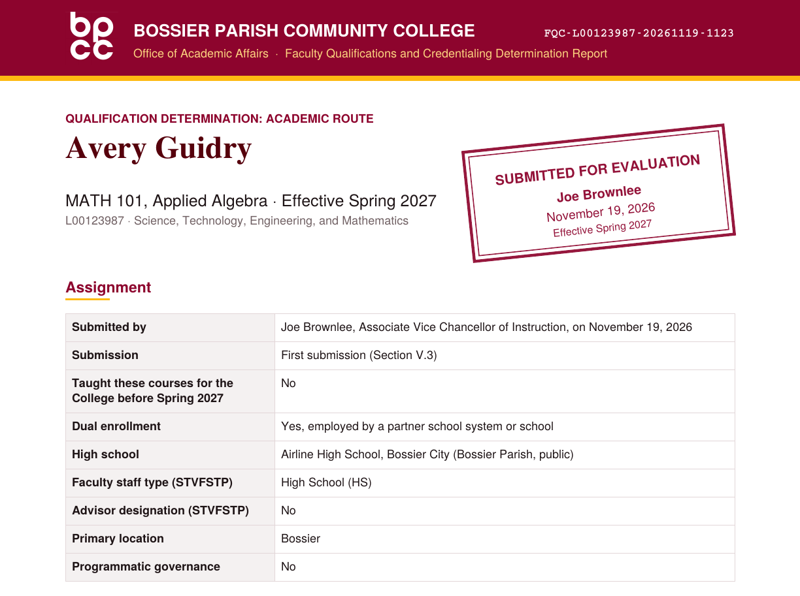
What stays with the divisions
| Assignments | The dean assigns the instructor only for courses the record approves, and only after Approved to teach (Section V.8). |
| Term certification | Before the Session A census date, each dean certifies that the division's assignments match approvals, dual enrollment sections included, and Academic Affairs verifies through sampling (Section V.12). |
| Assignment holds | When official transcripts are late, the instructor gets no additional or subsequent section until they arrive (Section V.2). The Banner setup does not change. |
| Removals | When approved courses are removed from a record, the dean assigns a qualified instructor (Section V.10). The instructor may still be approved for other courses, so the Banner setup stays. |
6For Human Resources
Every step Human Resources takes arrives as a request in the hr@bpcc.edu inbox, with the packet attached. A record that relies on no official transcripts, such as a professional determination resting on a license and work experience, skips Human Resources.
The requests you will see
| Request | When it comes, and its outcomes |
|---|---|
| Official transcripts check | After Academic Affairs approves a determination, or after an exception-based request or a reconsideration is approved. Transcripts on file, Transcripts due, or Does not match. |
| Official transcripts due | Opens with a provisional approval and stays open, with a weekly reminder, until the officials arrive. Received or Does not match. |
| Official transcripts past due | Opens the day after the due date, with the assignment hold. Received or Does not match. |
| Deadline check (Section VI.3) | The day after a Section VI.3 due date for a current faculty member. Received, Does not match, or Not received (late). |
| Emergency transcripts | After the AVCI authorizes an emergency credential. Transcripts on file, or Missing or does not match. |
Human Resources is also copied on two notices that need no answer: the Assignment hold and Assignment hold lifted.
The official transcripts check
The first request on a record, pictured in section 4, asks whether Human Resources holds the official transcripts the determination relies on and whether they confirm it. The packet's Academic preparation table names the credential: the award, the field, the institution, and the conferral date. When graduate coursework counts toward the 18-hour route, the packet lists each course with its institution and hours. Compare those with the officials in the personnel record.
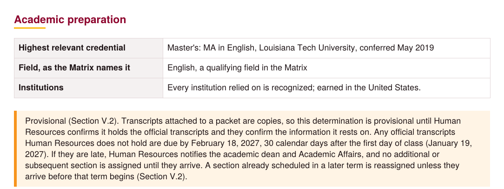
Official transcripts come directly from the awarding institution, or from the custodian of its student records if it has closed (Section V.2). Copies from the instructor or the division never count. Credentials earned outside the United States also need a course-by-course evaluation from a member of a recognized national association of credential evaluation services, received before the determination is finalized (Section V.2).
| Outcome | Choose it when | What happens next |
|---|---|---|
| Transcripts on file | Every official the determination relies on is in the personnel record and matches the packet. | The determination is no longer provisional. The Registrar receives the authorization, and the dean receives Approved to teach, which says nothing more is needed. |
| Transcripts due | Any official has not arrived yet. | The instructor is approved provisionally and may begin (Section V.2). A separate request opens for you to record the officials. |
| Does not match | An official differs from the copy in the packet. Say how in the comment. | The dean, the submitter, and the AVCI receive your comment word for word. The instructor may not begin until the AVCI decides whether the officials support the determination (Section V.2). |
Pressing a button opens a short page that repeats the choices. Confirm the response, add a comment (required for Does not match), sign, and submit. A thank-you page then says what the workflow sent.
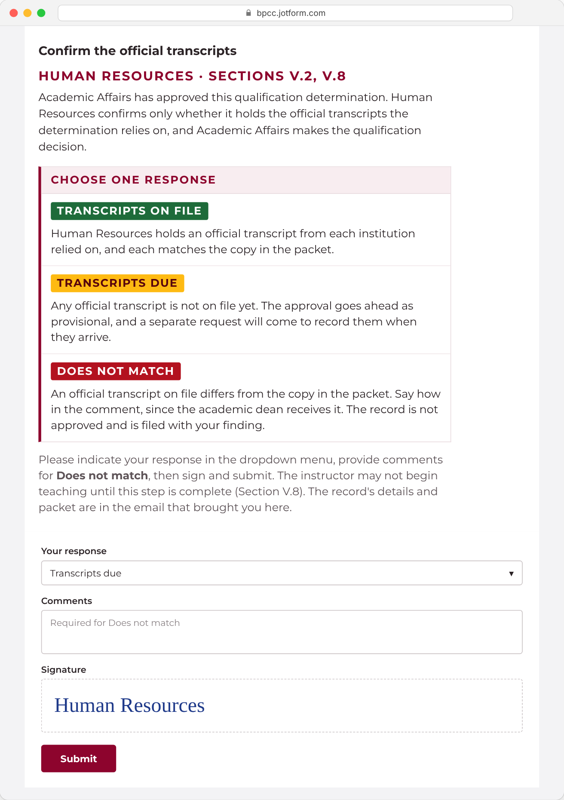
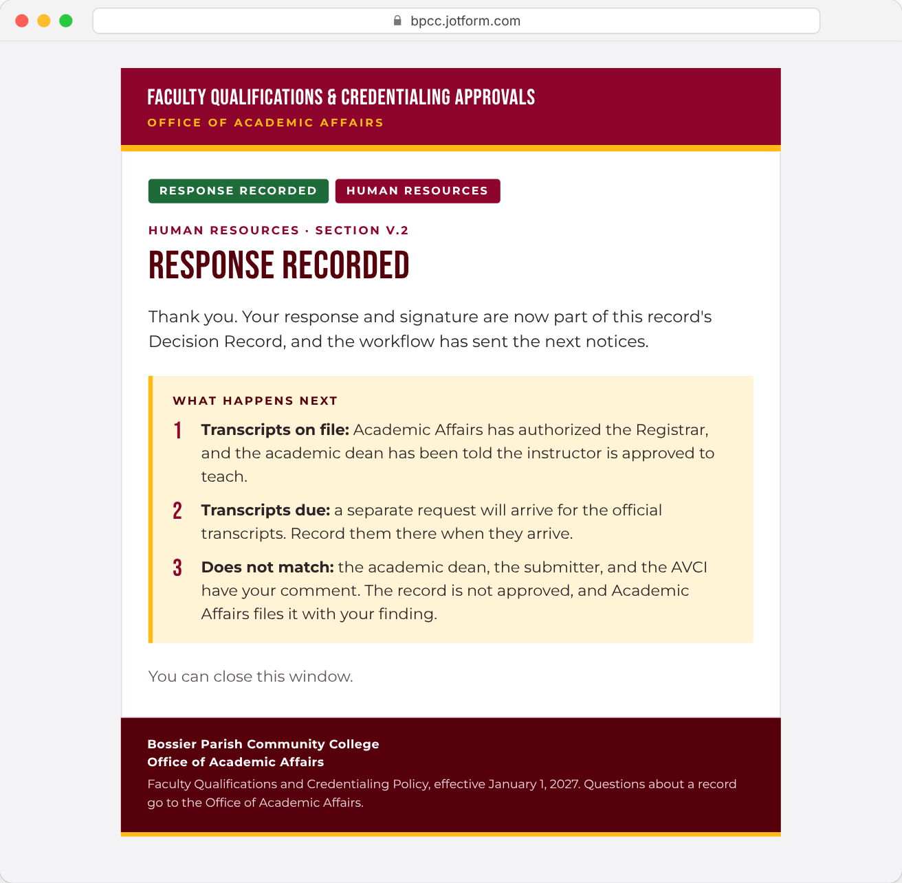
When transcripts are due
A provisional approval lets the instructor begin while the officials are on their way. Human Resources must receive them within 30 calendar days after the first day of class for the first section the instructor teaches under the determination (Section V.2). The due date is in the request, in the packet, and in the dean's email.
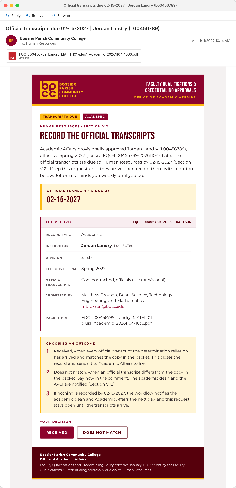
| Outcome | What happens next |
|---|---|
| Received | The dean and the submitter receive Official transcripts received. The approval is no longer provisional, any hold is lifted, and the record is filed. |
| Does not match | The dean, the submitter, and the AVCI receive a caution quoting your comment. No additional or subsequent section is assigned until the AVCI decides (Section V.2), and sections under way may continue. |
Late transcripts and assignment holds
If nothing has been recorded by the due date, the workflow gives the notice Section V.2 asks of Human Resources. The next day it sends the red Assignment hold email to the dean, the submitter, the AVCI, and Human Resources, and it opens the past-due request. Record the officials on either open request when they arrive, and the other closes. Received on either one sends Assignment hold lifted.
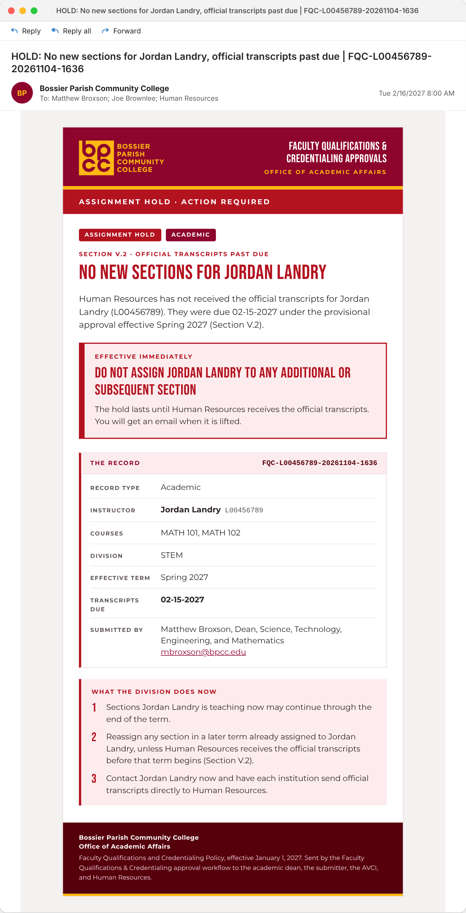
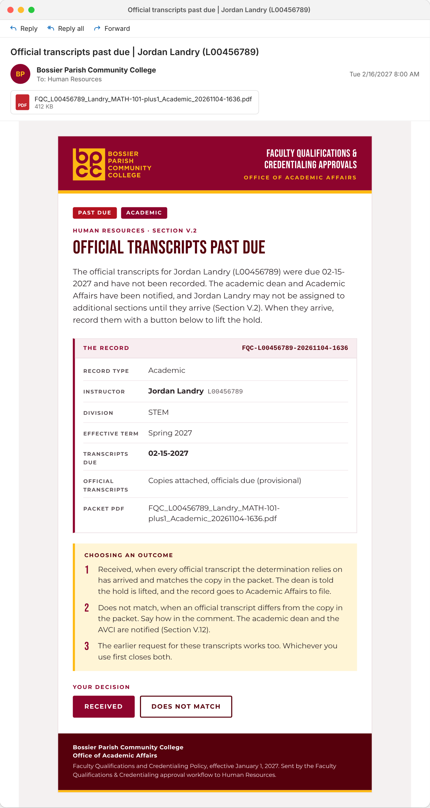
While the hold lasts, the instructor is assigned no additional or subsequent section. Sections under way continue through the end of the term, and a section already scheduled in a later term is reassigned unless the officials arrive before that term begins (Section V.2). The dean makes those changes; Human Resources records the transcripts.
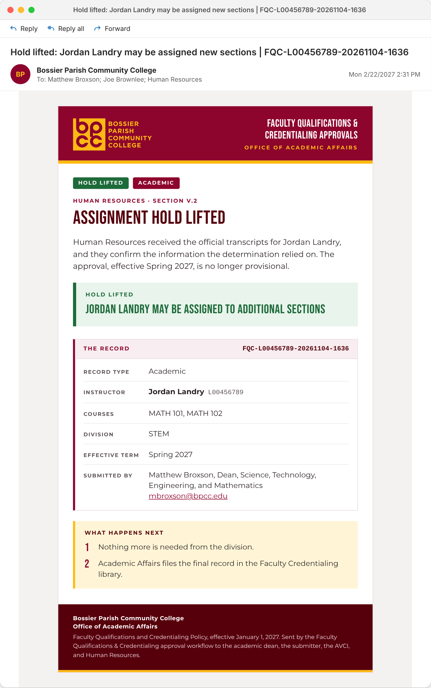
Current faculty under Section VI.3
The transition audit gives a current faculty member who meets the published standard, but whose record is missing documentation, 60 days after the packet is submitted, or after January 1, 2027 if later, to supply it (Section VI.3). The faculty member keeps teaching meanwhile (Section VI.1), and the packet prints which section the due date falls under. A VI.3 record opens its own transcripts request, and the day after the due date the deadline check asks whether they arrived.
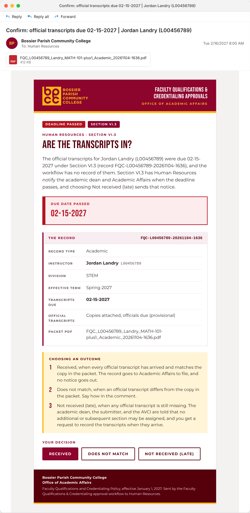
| Outcome | What happens next |
|---|---|
| Received | The officials are recorded, and the record is filed. |
| Does not match | The dean and the AVCI are notified with your comment, and the AVCI decides whether the officials support the determination. |
| Not received (late) | The dean, the submitter, and the AVCI are told no additional or subsequent section may be assigned, and a late request opens for when the officials arrive. The dean meets with the faculty member and may set a transition plan with the AVCI (Sections VI.3, VI.4). |
Emergency credentials
Section V.7 still requires the official transcripts to be collected and placed in the personnel record. Transcripts on file completes the record. Missing or does not match notifies the dean, the submitter, and the AVCI, and the record is still filed. The sections are not held for Human Resources, since an emergency credential is an exception to Section V.8.
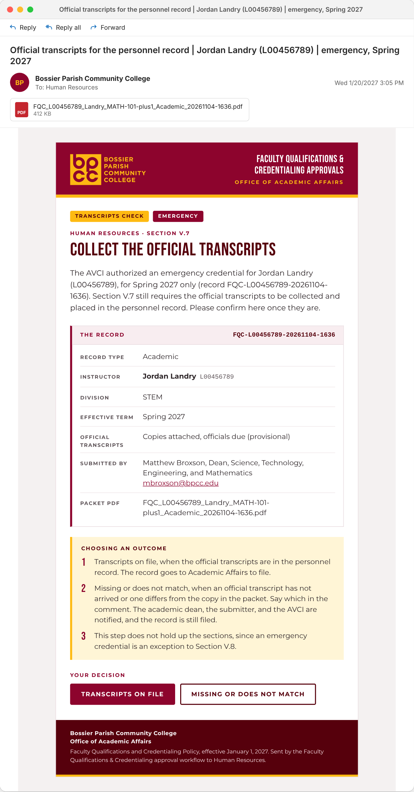
Special cases
| A closed institution | A transcript from the custodian of its student records counts as official. When the records do not survive, the AVCI decides whether other evidence documents the degree or coursework, and if it does, that evidence stands in place of the officials (Section V.2). The packet's Human Resources step says so. |
| Dual enrollment instructors | An instructor employed by a partner school system or school sends official transcripts to Human Resources like everyone else, within the same 30 days (Section V.2), and Human Resources keeps them (Section V.11). |
| Credentials earned later | The documentation goes to the dean, any official transcripts go to Human Resources, and Academic Affairs updates the credential record (Section V.11). A requalification review that relies on coursework completed since the original determination asks only about the new transcripts. |
Records
Human Resources maintains faculty members' official transcripts, dual enrollment instructors' included, under College and state records-management requirements (Section V.11). When a route is complete, Academic Affairs adds the Decision Record, with every decision, signature, and date, Human Resources' included, and files the final packet in the Faculty Credentialing library in SharePoint, which Human Resources can read in full. Credential documentation is kept for the duration of employment and five years after (Section V.11). The transcripts merged into a packet are working copies and never replace the officials.
7Scenarios
Nine records, start to finish. Each step names who acts, and the email it brings is pictured in sections 4 through 6.
1. A new adjunct whose official transcripts are on file
Casey Fontenot will teach ENGL 101 in Spring 2027 on a master's in English. Human Resources received the officials at hire.
- Academic AffairsThe AVCI or designee concurs that the instructor is qualified.
- Human ResourcesThe official transcripts check arrives. The officials match the packet, so Human Resources chooses Transcripts on file.
- RegistrarThe Registrar authorization arrives. The Registrar's Office sets Casey up in Banner for Spring 2027.
- DeanApproved to teach arrives, saying nothing more is needed. The division assigns Casey's sections.
- Academic AffairsThe records designee files the final packet.
2. A new hire approved on copies, with the officials on time
The dean attached transcript copies. Class begins January 19, so the officials are due February 18.
- Academic AffairsThe AVCI or designee concurs.
- Human ResourcesThe officials are not on file, so Human Resources chooses Transcripts due.
- RegistrarThe Registrar authorization arrives, the same as for any approval. The instructor is set up.
- DeanApproved to teach, transcripts due arrives with the due date, and the instructor may begin.
- Human ResourcesThe Official transcripts due request opens and reminds weekly. The officials arrive February 2, and Human Resources chooses Received.
- DeanOfficial transcripts received arrives. The approval is no longer provisional, and the record is filed.
3. The officials arrive late
The same record as scenario 2, but nothing is recorded by February 18.
- Human ResourcesOn February 19 the Assignment hold goes to the dean, the submitter, the AVCI, and Human Resources, and the past-due request opens.
- DeanThe instructor finishes the sections under way but gets no additional or subsequent section (Section V.2).
- Human ResourcesThe officials arrive March 1. Human Resources chooses Received on either open request, and the other closes.
- DeanAssignment hold lifted goes out, with Human Resources copied, and the record is filed.
4. The officials do not match the packet
The official transcript shows a different degree title than the copy the dean attached.
- Human ResourcesOn the official transcripts check, Human Resources chooses Does not match and writes what differs.
- DeanThe dean, the submitter, and the AVCI receive Not yet approved, quoting the comment. The instructor may not begin.
- Academic AffairsThe AVCI decides. If the officials support the determination, the record goes on to the Registrar authorization and Approved to teach. If not, the record is not approved and is filed.
- RegistrarThe Registrar receives the authorization only when the AVCI decides the officials support the determination.
After a provisional approval, Does not match on the transcripts due request sends a caution instead: no new sections until the AVCI accepts the officials or withdraws the approval.
5. A professional determination that relies on no transcripts
A welding instructor qualifies through an industry-based credential and work experience, and the determination relies on no transcript.
- Academic AffairsThe AVCI or designee concurs.
- Human ResourcesNothing arrives. The record skips the transcripts check.
- RegistrarThe Registrar authorization arrives right after Academic Affairs concurs.
- DeanApproved to teach arrives, and the record is filed.
6. A current faculty member under Section VI.3
A faculty member who taught before Spring 2027 meets the standard, but the personnel record is missing an official transcript. It is due 60 days after the packet.
- Human ResourcesOn the official transcripts check, Human Resources chooses Transcripts due.
- RegistrarThe Registrar authorization arrives. The faculty member is already set up, so the office confirms the setup and moves on.
- Human ResourcesThe Section VI.3 transcripts request opens. The day after the due date, the deadline check arrives, and the transcript is still missing, so Human Resources chooses Not received (late).
- DeanThe VI.3 hold reaches the dean, the submitter, the AVCI, and Human Resources. The dean meets with the faculty member and may set a transition plan with the AVCI (Sections VI.3, VI.4).
- Human ResourcesWhen the transcript arrives, Human Resources records it on the late request, and the hold is lifted.
7. An emergency credential
An instructor leaves a week before the term, and the AVCI authorizes a replacement for two named sections.
- Academic AffairsThe AVCI authorizes the named sections, and the Vice Chancellor for Academic Affairs and Institutional Effectiveness is notified (Section V.7).
- RegistrarThe emergency authorization arrives, for those sections and that term only.
- DeanEmergency credential authorized arrives, and the division assigns the two sections.
- Human ResourcesThe emergency transcripts request arrives. The sections are not held for it, and the record is filed either way.
8. A dual enrollment instructor from a partner high school
A teacher employed by Bossier Parish Schools will teach ENGL 101 to Airline High School students.
- Academic AffairsThe AVCI or designee concurs, on the same standard as every instructor of the course (Section V.9).
- Human ResourcesThe official transcripts check arrives like any other. The officials still come to Human Resources within 30 days (Section V.2).
- RegistrarThe Registrar authorization arrives. The packet records the High School (HS) staff type.
- AdmissionsAdmissions receives its copy of the approved determination for the dual enrollment roster.
9. An exception-based approval or a reconsideration
An instructor short of the published standard is approved on other documented expertise.
- Academic AffairsThe Committee recommends and the AVCI decides (Section V.5). On a reconsideration, the Vice Chancellor decides.
- Human ResourcesIf approved, the official transcripts check arrives, as in scenarios 1 through 4.
- RegistrarIf approved, the Registrar authorization follows. A denial sends nothing to either office.
8Common questions
- BothDo we need Jotform accounts?
- No. Human Resources' requests need no sign-in, and the Registrar's authorizations are emails only.
- BothWho reads our replies?
- Academic Affairs. Every workflow email is set to reply to the Associate Vice Chancellor of Instruction.
- BothA division ran a preliminary review on someone it has not hired.
- A preliminary review is not a determination and is never routed (Section V.8), so nothing reaches either office. If the College hires the individual, the first submission follows like any other.
- RegistrarA division emailed us directly to set up a new instructor.
- Once the approval workflow is live, the authorization comes from Academic Affairs when the record is approved. Until it arrives, the instructor has not been approved to teach, and the division can ask Academic Affairs where the record stands.
- RegistrarSSASECT refuses an instructor the division says is approved.
- Check the inbox for an authorization for that instructor and term. If none arrived, the record has not been approved yet.
- RegistrarThe approval is provisional. Does that change anything in Banner?
- No. The instructor may begin while the officials are on their way to Human Resources. If they arrive late, the dean stops assigning new sections until they do.
- RegistrarCan we see the packet?
- The authorization carries no attachment, and the Faculty Credentialing library is closed to general staff because packets carry employee IDs and transcript copies. Ask Academic Affairs for anything you need from a record.
- Human ResourcesDoes Human Resources clear the instructor to teach?
- No. Academic Affairs approves the assignment, and Human Resources confirms whether it holds the official transcripts the determination relies on (Section V.8).
- Human ResourcesOnly some of the officials are on file.
- Choose Transcripts due, and record the rest on the request that opens when they arrive.
- Human ResourcesWe are not sure whether a difference matters.
- Ask Academic Affairs before you choose, or choose Does not match and describe the difference. Either way, the AVCI decides whether the officials support the determination.
- Human ResourcesWho sees our comment?
- The academic dean, the submitter, any program director who prepared the packet, and the AVCI, quoted in their email. It is also kept in the Decision Record filed with the final packet.
- Human ResourcesIs a submission deleted from Jotform after its packet is filed?
- Not yet decided. Academic Affairs, Human Resources, and CSIR are settling whether submissions are deleted after filing, and after how long. The filed packet in SharePoint is the record either way (Section V.11).
9Who to contact
Questions? We're here to help!
Any record, email, or step in the approval workflow
If you'd like to walk through a request together or talk over a question, pick a time that works for you, and the call is set up in Teams.